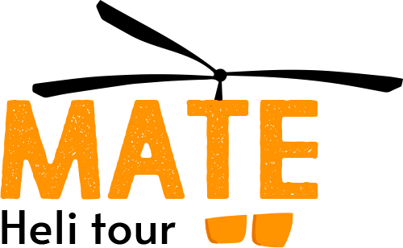

Mate Helitour es una empresa que se encarga de realizar vuelos con fines turísticos. No debemos olvidar el fanatismo e ilusión de MATE por volar en Helicoptero. En su logo podemos distinguir las helices de un helicoptero, una tipografia y color desgastados u oxidadados haciendo referencia a MATE.